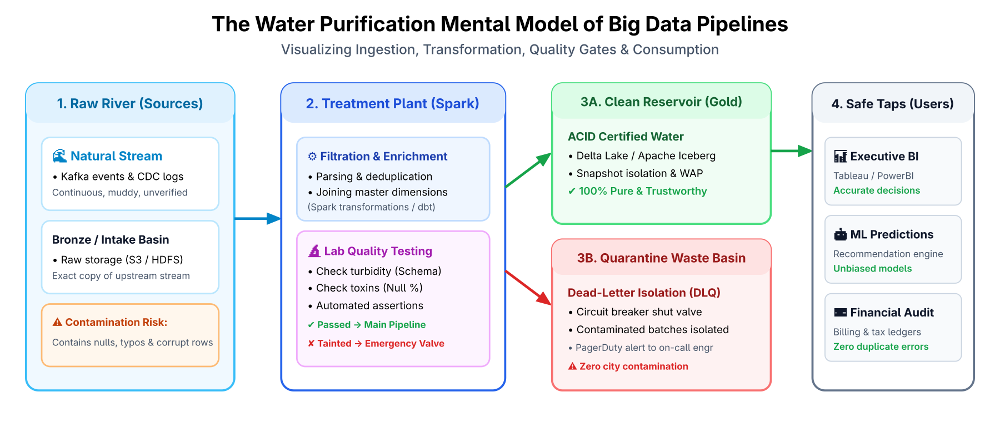
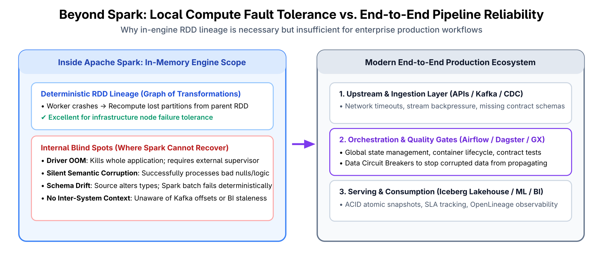
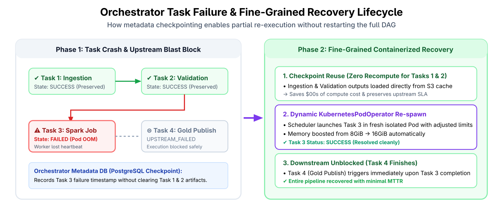
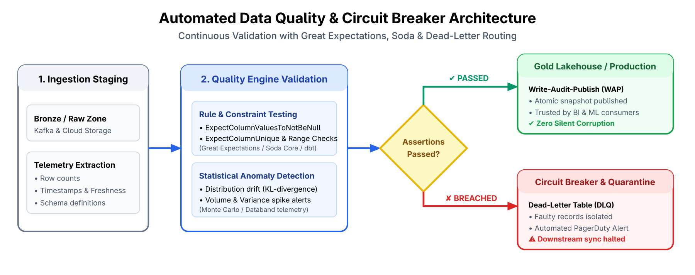
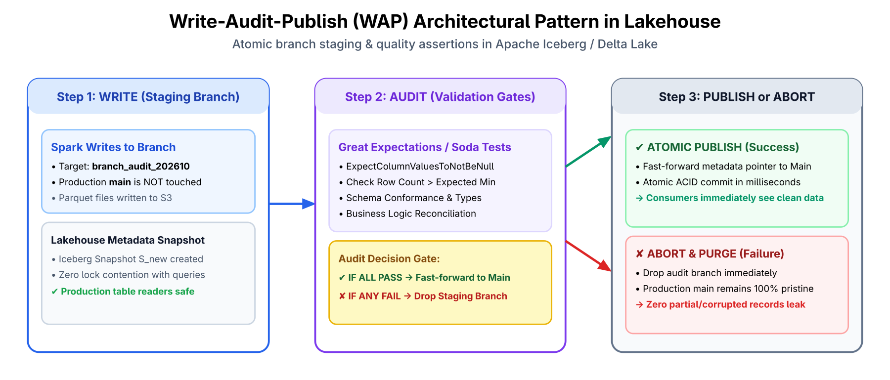
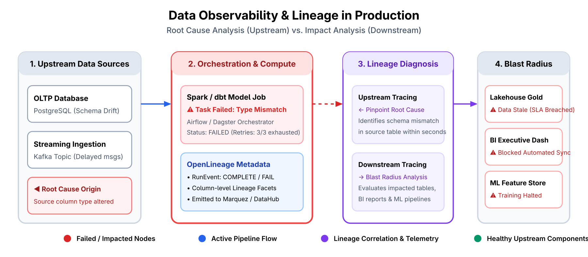
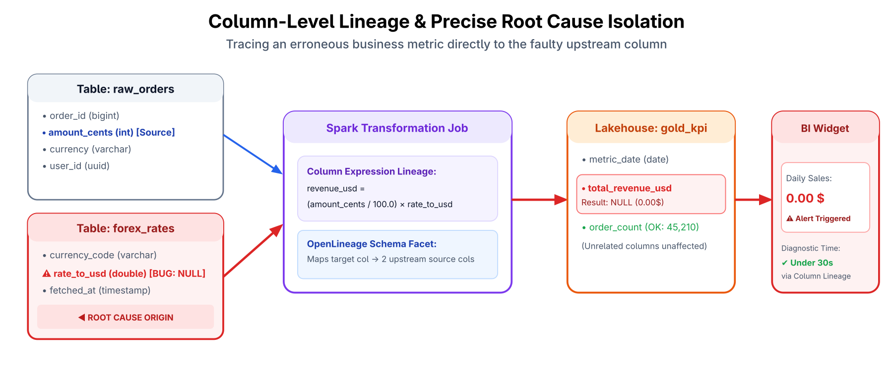
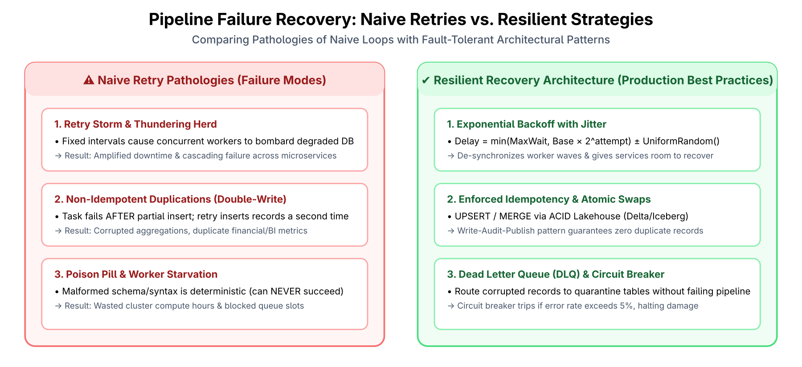

نشاط بحثي معمق — الموضوع الرابع (Thème 4) | مادة أطر عمل البيانات الضخمة (Frameworks Big Data)
المعهد العالي للغات المطبقة والإعلامية بباجة (ISLAI Béja)


{QUEUED, RUNNING, SUCCESS, FAILED, UPSTREAM_FAILED}
إذا انهار خادم المنسق، تبقى كافة الحالات السابقة محفوظة دون ضياع.




revenue_usd = (amount_cents / 100.0) * rate_to_usd


t_wait = min(t_max, U(0, t_base * 2^attempt))f(f(x)) = f(x)quarantine_table مع مواصلة معالجة ملايين السجلات السليمة دون توقف.
| المعيار الهندسي | الممارسة الساذجة التقليدية | الحل الإنتاجي المتقدم | الترسانة التقنية المعتمدة |
|---|---|---|---|
| إدارة التعافي | إعادة تشغيل الـ DAG كاملاً من البداية | استئناف دقيق للمهام الفاشلة وعزل الحاويات | Airflow K8s, Dagster Assets |
| مراقبة الجودة | فحص يدوي، أو انتظار شكاوى المستهلكين | فحوصات قيود استباقية وقواطع دائرة برمجية | Great Expectations, Soda Core |
| تشخيص الأعطال | البحث اليدوي العشوائي في السجلات | تتبع الأنساب على مستوى الأعمدة والرسم البياني | OpenLineage, Marquez, DataHub |
| سياسة المحاولات | تكرار فوري متطابق (Fixed Retries) | تراجع أسي مشوش + دمج تكراري + حجر صحي | Backoff with Jitter, Lakehouse, DLQ |
| حماية المخرجات | الكتابة المباشرة في جداول الإنتاج | نمط الكتابة-التدقيق-النشر الذري (WAP) | Apache Iceberg, Delta Branches |